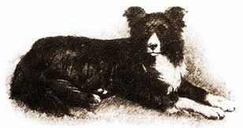
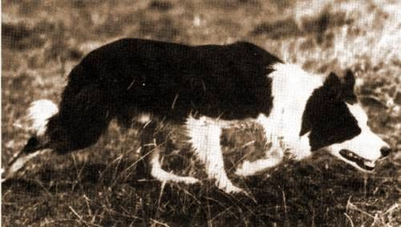
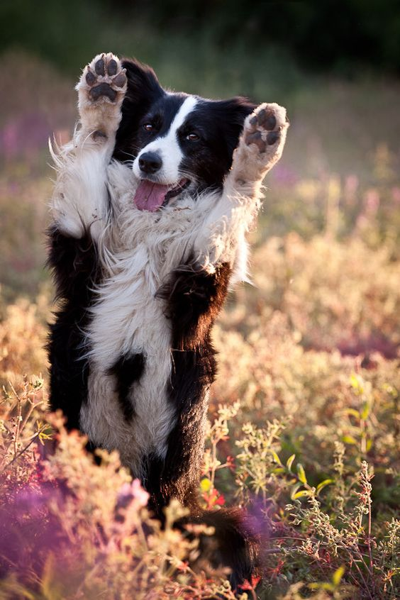
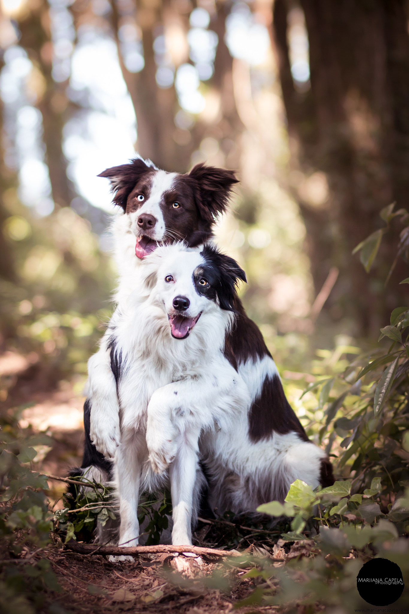
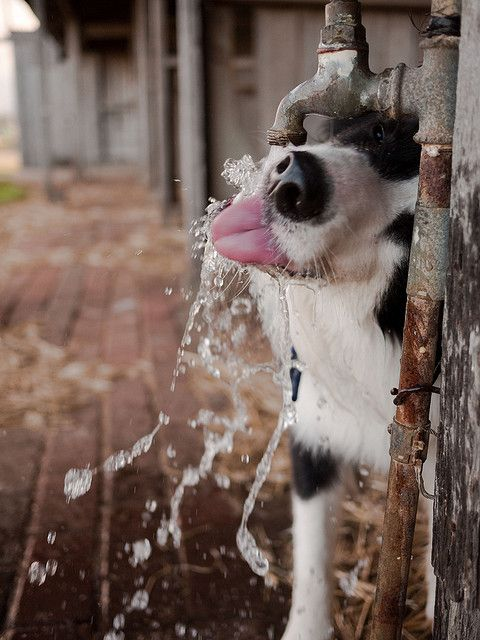

The word “border” is associated with James Reid‚ who was the secretary of the International Sheepdog Society from 1915 to 1948. The word assembly “border collie” was used to describe the dog who won the 1918 Supreme Championship.
In the olden days in Scotland‚ border collies were known as a valuable asset. The word “collie” comes from its Scottish dialect and the word also means “sheepdog”. There was een a time in 1860 in Balmoral‚ where Queen Victoria saw border collies at the Scotch Sheep Dogs Show and fell in love with them. Border collies were afficially recognized by the American Kennel Club on October 1st in 1995.
Old Hemp: Old Hemp was the “model” for the border collie exterior. He's never lost a trial since the age of one and has an amazing capability to read sheep. He was also able to finish each course with no difficulty. Old Hemp was a popular stud dog and it is said that the modern collies are descendants of Old Hemp‚ because they are so intelligent.
Old Kep: When Old Hemp died in 1901‚ Old Kep's popularity arose and was known as one of the kindest dogs. Old Kep's amazing “eye” skills‚ used to control sheep gave him 45 first places in trials. The eyes of the border collie comes from Old Kep's eye skills‚ and it is another attribute that contributed to the border collie's breed.
Wiston Cap: Wiston Cap was born in 1963 and was known as the most often used dog in the history of the border collies. He won the Internationals in 1965 and fathered countless puppies. Wiston Cap was a very much valued stud dog; it is also said that the most current collies are Cap's descendants. Wiston Cap's pricked ears were also noticed in the border collie breed.
Border collies should be raised by owners who are willing to play with them for a long duration of time. Border collies are very athletic and they strive for alot of exercise and training. If they are not kept busy, they may annoy you constantly by barking‚ digging holes in backyards‚ and chasing cars. Although they are hardworking‚ smart‚ and alert at all times‚ border collies are an absolute dynamo. The border collie can learn very quickly and it is very difficult to keep them challenged. Border collies are strongminded‚ independent‚ and are highly sensitive to noise. Border collies can however be fearful and shy if they are not socialized well.
|  |  |  |